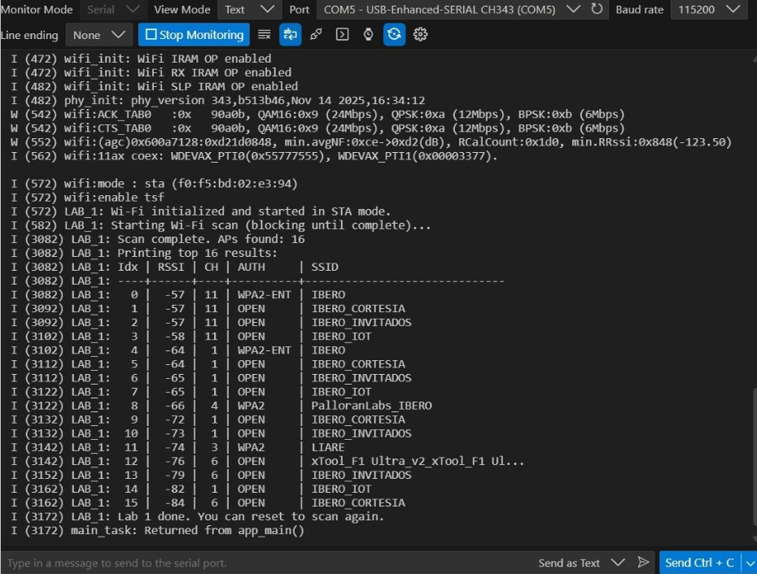

Session — Wi-Fi + HTTP Server: 2 LEDs, Button, and Motor Slider
Implement an ESP32-C6 HTTP server (GET-only UI) to control two LEDs, read a button state, and control a DC motor speed/direction using a slider.
1) Activity Goals
- [ ] Turn 2 LEDs ON/OFF from a browser (HTTP GET UI).
- [ ] Read a physical button and show its state on the browser page.
- [ ] Control motor direction (FWD/REV) and speed (0–100%) from the browser.
- [ ] Document evidence (serial logs + screenshots + video).
2) Materials & Setup
BOM (Bill of Materials)
| # | Item | Qty | Link/Source | Cost (MXN) | Notes |
|---|---|---|---|---|---|
| 1 | ESP32-C6 DevKit | 1 | Local Store / Amazon / MercadoLibre | 365 | Main development board |
| 2 | LED | 2 | Local electronics store | 3 c/u | LED1 → GPIO 8, LED2 → GPIO 2 |
| 3 | Resistor (recommended) | 2 | Local electronics store | ____ | 220–330 Ω in series with each LED |
| 4 | Push Button | 1 | Local electronics store / Amazon / MercadoLibre | ____ | Button → GPIO 10 (pull-up, active-low) |
| 5 | TB6612 motor driver | 1 | Local electronics store / Amazon / MercadoLibre | ____ | PWMA=GPIO 4, IN1=GPIO 5, IN2=GPIO 6, STBY=GPIO 1 |
| 6 | DC Motor | 1 | Local electronics store / Amazon / MercadoLibre | ____ | Controlled by TB6612 |
Tools/Software
- Framework: ESP-IDF + FreeRTOS
- Build/Flash/Monitor:
idf.py build flash monitor - Browser: Chrome/Firefox (same network as ESP32)
Wiring / Safety
- Button wiring: GPIO10 with internal pull-up; pressed = 0, released = 1.
- Motor driver: TB6612; verify motor power and GND common with ESP32.
- PWM: LEDC @ 5 kHz, 10-bit resolution (0–1023 duty).
3) Procedure (what you did)
- Initialized NVS (
nvs_flash_init()), network interface (esp_netif_init()), and event loop (esp_event_loop_create_default()). - Configured Wi-Fi in STA mode with SSID/PASS and started the driver.
- Waited for
IP_EVENT_STA_GOT_IPusing an EventGroup bit (WIFI_CONNECTED_BIT). - Initialized peripherals:
- LED1 (GPIO 8) and LED2 (GPIO 2) as outputs
- Button (GPIO 10) as input with pull-up
- TB6612 motor driver pins + LEDC PWM on PWMA
- Started HTTP server and registered routes:
GET /→ HTML UI (auto-refresh every 1s)GET /ledon1,GET /ledoff1GET /ledon2,GET /ledoff2GET /motor?speed=0..100GET /motor?dir=fwd|rev- Verified LED control, button state update, and motor speed/direction control from a browser.
4) Data, Tests & Evidence
Wi-Fi Scan Results

Figure 1. Serial terminal showing the Wi-Fi scan results table with multiple access points detected. The strongest RSSI detected was -57 dBm on channel 11, with networks including IBERO, IBERO_CORTESIA, and IBERO_INVITADOS.
Successful Wi-Fi Connection

Figure 2. Serial terminal showing a successful Wi-Fi connection to the network "iPhone de Carlos", including the assigned IP address 172.20.10.2 and confirmation that the device is ready to start the HTTP server.
Failed Wi-Fi Connection Attempt

Figure 3. Serial terminal showing an intentional failed connection attempt with multiple retry attempts and the final message "Failed to connect after 10 retries."
Videos (Evidence)
Video 1. Demo: Control LED1 + LED2 from browser.
Video 2. Demo: Button state changes shown on page (auto refresh).
Video 3. Demo: Motor speed slider + FWD/REV controls.
5) Lab Questions and Answers
Lab 1 — Wi-Fi Scan
What is the SSID of the strongest AP detected in your scan?
IBERO (tie with IBERO_CORTESIA and IBERO_INVITADOS)
What is the RSSI value of that AP?
-57 dBm
What authentication mode does that AP use?
WPA2-ENT
What channel is that AP operating on?
Channel 11
Which channel had the most APs detected in your scan?
Channel 1
Lab 2 — Wi-Fi STA + Reconnect
What event indicates “Wi-Fi driver started and is ready to connect”?
WIFI_EVENT_STA_START
What event indicates “network stack has an IP and the device is online”?
IP_EVENT_STA_GOT_IP
What is the assigned IP address?
172.20.10.2
How many retries occurred before success or failure?
10 retries before failure.
In your logs, which happened first: WIFI_EVENT_STA_START or IP_EVENT_STA_GOT_IP? Why?
WIFI_EVENT_STA_START happened first because the Wi-Fi station must start before the device can connect and obtain an IP address.
6) Analysis
How the system works (GET-only UI)
- The ESP32 firmware runs the HTTP server and GPIO/PWM logic.
- The browser loads
GET /and the page refreshes automatically every 1 second using<meta http-equiv='refresh' content='1'>. - LED endpoints update GPIO outputs, and
/motorupdates direction + PWM duty.
7) Code
Full firmware (single file)
main/main.c
/*
* LAB 3 — ESP32-C6 Wi-Fi + HTTP (GET-only UI)
*/
#include <string.h>
#include <stdio.h>
#include <stdlib.h>
#include <stdbool.h>
#include "freertos/FreeRTOS.h"
#include "freertos/event_groups.h"
#include "esp_log.h"
#include "esp_err.h"
#include "nvs_flash.h"
#include "esp_netif.h"
#include "esp_event.h"
#include "esp_wifi.h"
#include "driver/gpio.h"
#include "driver/ledc.h"
#include "esp_http_server.h"
#define WIFI_SSID "iPhone de Carlos"
#define WIFI_PASS "dogui123"
#define LED1_GPIO 8
#define LED2_GPIO 2
#define BUTTON_GPIO 10
#define MAX_RETRY 10
/* TB6612 */
#define MOTOR_PWM_GPIO 4 // PWMA
#define MOTOR_IN1_GPIO 5 // AIN1
#define MOTOR_IN2_GPIO 6 // AIN2
#define MOTOR_STBY_GPIO 1 // STBY
// LEDC
#define MOTOR_LEDC_TIMER LEDC_TIMER_0
#define MOTOR_LEDC_MODE LEDC_LOW_SPEED_MODE
#define MOTOR_LEDC_CHANNEL LEDC_CHANNEL_0
#define MOTOR_LEDC_DUTY_RES LEDC_TIMER_10_BIT // 0..1023
#define MOTOR_LEDC_FREQUENCY 5000
/* Globals */
static const char *TAG = "LAB_3";
static EventGroupHandle_t s_wifi_event_group;
#define WIFI_CONNECTED_BIT BIT0
static int s_retry = 0;
static int s_led_state1 = 0;
static int s_led_state2 = 0;
static int s_button_state = 0;
static httpd_handle_t s_server = NULL;
// Motor state
static int s_motor_speed = 0; // 0..100
static int s_motor_dir_fwd = 1; // 1=fwd, 0=rev
/* ===================== LED ===================== */
static void led_init(void)
{
gpio_reset_pin(LED1_GPIO);
gpio_set_direction(LED1_GPIO, GPIO_MODE_OUTPUT);
gpio_reset_pin(LED2_GPIO);
gpio_set_direction(LED2_GPIO, GPIO_MODE_OUTPUT);
s_led_state1 = 0;
s_led_state2 = 0;
gpio_set_level(LED1_GPIO, s_led_state1);
gpio_set_level(LED2_GPIO, s_led_state2);
ESP_LOGI(TAG, "LEDs initialized on GPIO %d and %d (state=%d)", LED1_GPIO, LED2_GPIO, s_led_state1);
}
static void led_set1(int on)
{
s_led_state1 = (on != 0);
gpio_set_level(LED1_GPIO, s_led_state1);
}
static void led_set2(int on)
{
s_led_state2 = (on != 0);
gpio_set_level(LED2_GPIO, s_led_state2);
}
/* ===================== Button ===================== */
static void button_init(void)
{
gpio_reset_pin(BUTTON_GPIO);
gpio_set_direction(BUTTON_GPIO, GPIO_MODE_INPUT);
gpio_pullup_en(BUTTON_GPIO); // pull-up: pressed=0
}
static int button_read(void)
{
return gpio_get_level(BUTTON_GPIO); // 1=released, 0=pressed
}
/* ===================== Motor ===================== */
static void motor_apply(void)
{
if (s_motor_speed < 0) s_motor_speed = 0;
if (s_motor_speed > 100) s_motor_speed = 100;
// Enable driver only when speed > 0
gpio_set_level(MOTOR_STBY_GPIO, (s_motor_speed > 0) ? 1 : 0);
// Direction
if (s_motor_dir_fwd) {
gpio_set_level(MOTOR_IN1_GPIO, 1);
gpio_set_level(MOTOR_IN2_GPIO, 0);
} else {
gpio_set_level(MOTOR_IN1_GPIO, 0);
gpio_set_level(MOTOR_IN2_GPIO, 1);
}
// PWM duty (0..1023)
uint32_t duty = (uint32_t)((s_motor_speed * 1023) / 100);
ledc_set_duty(MOTOR_LEDC_MODE, MOTOR_LEDC_CHANNEL, duty);
ledc_update_duty(MOTOR_LEDC_MODE, MOTOR_LEDC_CHANNEL);
ESP_LOGI(TAG, "Motor: speed=%d%% dir=%s duty=%lu STBY=%d",
s_motor_speed,
s_motor_dir_fwd ? "fwd" : "rev",
(unsigned long)duty,
(s_motor_speed > 0) ? 1 : 0);
}
static void motor_init(void)
{
// DIR pins
gpio_reset_pin(MOTOR_IN1_GPIO);
gpio_set_direction(MOTOR_IN1_GPIO, GPIO_MODE_OUTPUT);
gpio_reset_pin(MOTOR_IN2_GPIO);
gpio_set_direction(MOTOR_IN2_GPIO, GPIO_MODE_OUTPUT);
// STBY pin
gpio_reset_pin(MOTOR_STBY_GPIO);
gpio_set_direction(MOTOR_STBY_GPIO, GPIO_MODE_OUTPUT);
gpio_set_level(MOTOR_STBY_GPIO, 0);
// LEDC timer
ledc_timer_config_t timer = {
.speed_mode = MOTOR_LEDC_MODE,
.timer_num = MOTOR_LEDC_TIMER,
.duty_resolution = MOTOR_LEDC_DUTY_RES,
.freq_hz = MOTOR_LEDC_FREQUENCY,
.clk_cfg = LEDC_AUTO_CLK
};
ESP_ERROR_CHECK(ledc_timer_config(&timer));
// LEDC channel (PWMA)
ledc_channel_config_t channel = {
.speed_mode = MOTOR_LEDC_MODE,
.channel = MOTOR_LEDC_CHANNEL,
.timer_sel = MOTOR_LEDC_TIMER,
.intr_type = LEDC_INTR_DISABLE,
.gpio_num = MOTOR_PWM_GPIO,
.duty = 0,
.hpoint = 0
};
ESP_ERROR_CHECK(ledc_channel_config(&channel));
s_motor_speed = 0;
s_motor_dir_fwd = 1;
motor_apply();
ESP_LOGI(TAG, "Motor init: PWMA=%d IN1=%d IN2=%d STBY=%d",
MOTOR_PWM_GPIO, MOTOR_IN1_GPIO, MOTOR_IN2_GPIO, MOTOR_STBY_GPIO);
}
/* ===================== HTTP Handlers ===================== */
static esp_err_t root_get_handler(httpd_req_t *req)
{
static char response[4096];
int level = button_read();
const char *btn_str = (level == 0) ? "PRESSED" : "RELEASED";
snprintf(response, sizeof(response),
"<!doctype html>\n"
"<html><head>\n"
" <meta charset='utf-8'>\n"
" <meta name='viewport' content='width=device-width, initial-scale=1'>\n"
" <meta http-equiv='refresh' content='1'>\n"
" <title>ESP32-C6 Control</title>\n"
"</head><body>\n"
" <h2>ESP32-C6 LED Control (GET-only)</h2>\n"
" <p>Use the buttons below to send HTTP GET requests to the ESP32.</p>\n"
" <p>\n"
" <a href='/ledon1'><button>LED1 ON</button></a>\n"
" <a href='/ledoff1'><button>LED1 OFF</button></a>\n"
" </p>\n"
" <p>\n"
" <a href='/ledon2'><button>LED2 ON</button></a>\n"
" <a href='/ledoff2'><button>LED2 OFF</button></a>\n"
" </p>\n"
" <p><strong>Button STATE:</strong> %s</p>\n"
" <hr>\n"
" <h3>Motor (TB6612)</h3>\n"
" <p><strong>Dir:</strong> %s</p>\n"
" <p><strong>Speed:</strong> %d%%</p>\n"
" <p>\n"
" <a href='/motor?dir=fwd'><button>Forward</button></a>\n"
" <a href='/motor?dir=rev'><button>Reverse</button></a>\n"
" <a href='/motor?speed=0'><button>Stop</button></a>\n"
" </p>\n"
" <p>\n"
" <input type='range' min='0' max='100' value='%d' style='width:320px;' "
" oninput=\"document.getElementById('sp').innerText=this.value\" "
" onchange=\"location.href='/motor?speed='+this.value;\" />\n"
" </p>\n"
" <p>Selected speed: <b><span id='sp'>%d</span>%%</b></p>\n"
" <hr>\n"
" <p>Direct URLs:</p>\n"
" <ul>\n"
" <li><code>/ledon1</code></li>\n"
" <li><code>/ledoff1</code></li>\n"
" <li><code>/ledon2</code></li>\n"
" <li><code>/ledoff2</code></li>\n"
" <li><code>/motor?speed=0..100</code></li>\n"
" <li><code>/motor?dir=fwd|rev</code></li>\n"
" </ul>\n"
"</body></html>\n",
btn_str,
s_motor_dir_fwd ? "fwd" : "rev",
s_motor_speed,
s_motor_speed,
s_motor_speed
);
httpd_resp_set_type(req, "text/html");
httpd_resp_send(req, response, HTTPD_RESP_USE_STRLEN);
return ESP_OK;
}
static esp_err_t ledon_get_handler1(httpd_req_t *req)
{
led_set1(1);
static const char *RESP =
"<!doctype html><html><body>"
"<h3>LED1 is now: ON</h3>"
"<p><a href='/'><button>Back</button></a></p>"
"</body></html>";
httpd_resp_set_type(req, "text/html");
httpd_resp_send(req, RESP, HTTPD_RESP_USE_STRLEN);
return ESP_OK;
}
static esp_err_t ledoff_get_handler1(httpd_req_t *req)
{
led_set1(0);
static const char *RESP =
"<!doctype html><html><body>"
"<h3>LED1 is now: OFF</h3>"
"<p><a href='/'><button>Back</button></a></p>"
"</body></html>";
httpd_resp_set_type(req, "text/html");
httpd_resp_send(req, RESP, HTTPD_RESP_USE_STRLEN);
return ESP_OK;
}
static esp_err_t ledon_get_handler2(httpd_req_t *req)
{
led_set2(1);
static const char *RESP =
"<!doctype html><html><body>"
"<h3>LED2 is now: ON</h3>"
"<p><a href='/'><button>Back</button></a></p>"
"</body></html>";
httpd_resp_set_type(req, "text/html");
httpd_resp_send(req, RESP, HTTPD_RESP_USE_STRLEN);
return ESP_OK;
}
static esp_err_t ledoff_get_handler2(httpd_req_t *req)
{
led_set2(0);
static const char *RESP =
"<!doctype html><html><body>"
"<h3>LED2 is now: OFF</h3>"
"<p><a href='/'><button>Back</button></a></p>"
"</body></html>";
httpd_resp_set_type(req, "text/html");
httpd_resp_send(req, RESP, HTTPD_RESP_USE_STRLEN);
return ESP_OK;
}
/* Motor GET: /motor?speed=.. or /motor?dir=fwd|rev */
static esp_err_t motor_get_handler(httpd_req_t *req)
{
char q[128] = {0};
char v[16] = {0};
if (httpd_req_get_url_query_str(req, q, sizeof(q)) == ESP_OK) {
if (httpd_query_key_value(q, "dir", v, sizeof(v)) == ESP_OK) {
s_motor_dir_fwd = (strcmp(v, "rev") == 0) ? 0 : 1;
}
if (httpd_query_key_value(q, "speed", v, sizeof(v)) == ESP_OK) {
int sp = atoi(v);
if (sp < 0) sp = 0;
if (sp > 100) sp = 100;
s_motor_speed = sp;
}
motor_apply();
}
static const char *RESP =
"<!doctype html><html><body>"
"<h3>Motor updated</h3>"
"<p><a href='/'><button>Back</button></a></p>"
"</body></html>";
httpd_resp_set_type(req, "text/html");
httpd_resp_send(req, RESP, HTTPD_RESP_USE_STRLEN);
return ESP_OK;
}
/* ===================== HTTP Server Start ===================== */
static void http_server_start(void)
{
httpd_config_t config = HTTPD_DEFAULT_CONFIG();
ESP_ERROR_CHECK(httpd_start(&s_server, &config));
ESP_LOGI(TAG, "HTTP server started (port %d)", config.server_port);
httpd_uri_t root = { .uri="/", .method=HTTP_GET, .handler=root_get_handler, .user_ctx=NULL };
httpd_uri_t ledon1 = { .uri="/ledon1", .method=HTTP_GET, .handler=ledon_get_handler1, .user_ctx=NULL };
httpd_uri_t ledoff1 = { .uri="/ledoff1", .method=HTTP_GET, .handler=ledoff_get_handler1, .user_ctx=NULL };
httpd_uri_t ledon2 = { .uri="/ledon2", .method=HTTP_GET, .handler=ledon_get_handler2, .user_ctx=NULL };
httpd_uri_t ledoff2 = { .uri="/ledoff2", .method=HTTP_GET, .handler=ledoff_get_handler2, .user_ctx=NULL };
httpd_uri_t motor = { .uri="/motor", .method=HTTP_GET, .handler=motor_get_handler, .user_ctx=NULL };
ESP_ERROR_CHECK(httpd_register_uri_handler(s_server, &root));
ESP_ERROR_CHECK(httpd_register_uri_handler(s_server, &ledon1));
ESP_ERROR_CHECK(httpd_register_uri_handler(s_server, &ledoff1));
ESP_ERROR_CHECK(httpd_register_uri_handler(s_server, &ledon2));
ESP_ERROR_CHECK(httpd_register_uri_handler(s_server, &ledoff2));
ESP_ERROR_CHECK(httpd_register_uri_handler(s_server, &motor));
ESP_LOGI(TAG, "Routes: GET /, /ledon1, /ledoff1, /ledon2, /ledoff2, /motor");
}
/* ===================== Wi-Fi STA connect + events ===================== */
static void wifi_event_handler(void *arg,
esp_event_base_t event_base,
int32_t event_id,
void *event_data)
{
if (event_base == WIFI_EVENT && event_id == WIFI_EVENT_STA_START) {
ESP_LOGI(TAG, "WIFI_EVENT_STA_START -> connecting...");
ESP_ERROR_CHECK(esp_wifi_connect());
return;
}
if (event_base == WIFI_EVENT && event_id == WIFI_EVENT_STA_DISCONNECTED) {
if (s_retry < MAX_RETRY) {
s_retry++;
ESP_LOGW(TAG, "Disconnected. Retrying (%d/%d)...", s_retry, MAX_RETRY);
ESP_ERROR_CHECK(esp_wifi_connect());
} else {
ESP_LOGE(TAG, "Failed to connect after %d retries.", MAX_RETRY);
}
return;
}
if (event_base == IP_EVENT && event_id == IP_EVENT_STA_GOT_IP) {
ip_event_got_ip_t *event = (ip_event_got_ip_t *)event_data;
ESP_LOGI(TAG, "Got IP: " IPSTR, IP2STR(&event->ip_info.ip));
s_retry = 0;
xEventGroupSetBits(s_wifi_event_group, WIFI_CONNECTED_BIT);
return;
}
}
static void wifi_init_sta(void)
{
s_wifi_event_group = xEventGroupCreate();
ESP_ERROR_CHECK(esp_netif_init());
ESP_ERROR_CHECK(esp_event_loop_create_default());
esp_netif_create_default_wifi_sta();
wifi_init_config_t cfg = WIFI_INIT_CONFIG_DEFAULT();
ESP_ERROR_CHECK(esp_wifi_init(&cfg));
ESP_ERROR_CHECK(esp_event_handler_register(WIFI_EVENT, ESP_EVENT_ANY_ID, &wifi_event_handler, NULL));
ESP_ERROR_CHECK(esp_event_handler_register(IP_EVENT, IP_EVENT_STA_GOT_IP, &wifi_event_handler, NULL));
wifi_config_t wifi_config = {0};
strncpy((char *)wifi_config.sta.ssid, WIFI_SSID, sizeof(wifi_config.sta.ssid));
strncpy((char *)wifi_config.sta.password, WIFI_PASS, sizeof(wifi_config.sta.password));
ESP_LOGI(TAG, "Configuring Wi-Fi STA: SSID='%s'", WIFI_SSID);
ESP_ERROR_CHECK(esp_wifi_set_mode(WIFI_MODE_STA));
ESP_ERROR_CHECK(esp_wifi_set_config(WIFI_IF_STA, &wifi_config));
ESP_ERROR_CHECK(esp_wifi_start());
}
/* ===================== app_main ===================== */
void app_main(void)
{
ESP_LOGI(TAG, "Lab 3 start: Wi-Fi + HTTP.");
// NVS init
esp_err_t ret = nvs_flash_init();
if (ret == ESP_ERR_NVS_NO_FREE_PAGES || ret == ESP_ERR_NVS_NEW_VERSION_FOUND) {
ESP_ERROR_CHECK(nvs_flash_erase());
ESP_ERROR_CHECK(nvs_flash_init());
} else {
ESP_ERROR_CHECK(ret);
}
wifi_init_sta();
// Wait for IP
EventBits_t bits = xEventGroupWaitBits(
s_wifi_event_group,
WIFI_CONNECTED_BIT,
pdFALSE,
pdTRUE,
pdMS_TO_TICKS(30000)
);
if (!(bits & WIFI_CONNECTED_BIT)) {
ESP_LOGE(TAG, "Timeout waiting for Wi-Fi connection. Check SSID/PASS and 2.4 GHz.");
return;
}
led_init();
button_init();
motor_init();
http_server_start();
ESP_LOGI(TAG, "Open: http://<ESP_IP>/");
ESP_LOGI(TAG, "Motor control: http://<ESP_IP>/motor?speed=50 or /motor?dir=rev");
}
8) Files & Media
- Firmware:
main/main.c - Videos (YouTube):
- LED demo: https://youtu.be/WE9whLGg0yE?si=s_i7rPqc8CkSHsCT
- Button demo: https://youtu.be/0AvwC2oibjk?si=JjecRpnr4qWmavsA
- Motor demo: https://youtu.be/AEDkRwSyxA8?si=GuRx5-D0Ki242r6H